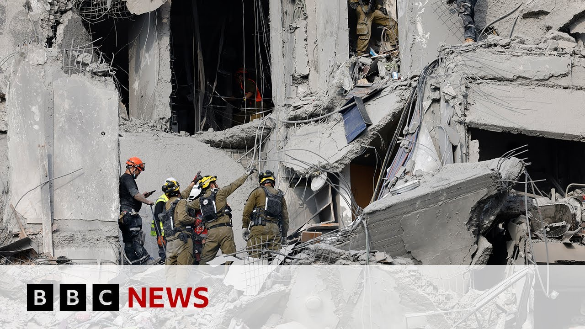

【2025-06-25 BBC新闻：伊朗否认违反与以色列停火协议的报道】
Summary: In the past half hour, Iran denied launching missiles at Israel, although Israel previously claimed to have detected the attacks. The conflict broke out just hours after U.S. President Trump announced a ceasefire. Iran later launched six missiles at a U.S. military base in Qatar in retaliation for the U.S. strike. Before that, Iran had already launched four waves of missile attacks on Israel, with the Israeli military reporting six strikes within two hours. In Beersheba and other areas, four people were killed, and millions took shelter following repeated missile alerts. Iran stated that Israeli airstrikes on Gilan Province killed nine people.
摘要： 过去半小时内，伊朗否认向以色列发射导弹，尽管以方早前称侦测到攻击。冲突爆发于美总统特朗普宣布停火生效后数小时，伊方随后向卡塔尔美军基地发射六枚导弹以报复美方打击。此前，伊朗已对以色列发动四轮导弹攻击，以军称两小时内遭六次打击。以色列贝尔谢巴等地有四人死亡，数百万人因导弹警报避难。伊朗称以军空袭吉兰省造成九人死亡。

⏱️ Estimated Reading Time: 19 min
📚 六级生词 📚 雅思生词 📚 托福生词 📚 专八生词 📚 SAT生词 📚 考研生词 📚 GRE生词 📚 高考生词
In the past half hour, news about a missile attack by Iran on Israel has been denied by an armed forces general in Tehran through state television.
过去半小时内，德黑兰一名武装部队将领通过国家电视台否认了伊朗向以色列发动导弹袭击的消息。
Israeli military had earlier said it had detected launches from Iran to which the Israeli defense minister Israel Katz said Iran Israel would be responding forcefully.
以色列军方早前称侦测到来自伊朗的发射行动，以防长卡茨表示将予以强力回击。
Well, this all comes hours after a ceasefire between the two countries took effect.
此次冲突爆发于两国停火协议生效数小时后。
American President Donald Trump took to social media overnight to state the ceasefire is now in effect.
美国总统特朗普连夜在社交媒体宣布停火协议现已生效。
Please do not violate it.
请勿违反协议。
Before signing off, Donald J. Trump, President of the United States.
署名：唐纳德·J·特朗普，美国总统。
President Trump's ceasefire announcement coming just a few hours after Iran launched missiles at a US air base in Qatar.
特朗普宣布停火前数小时，伊朗刚向卡塔尔美军基地发射导弹。
That was in response to American strikes on its nuclear sites at the weekend.
此举是为报复美方周末对其核设施的打击。
There was a statement from Iran.
伊朗发布了一份声明。
It said that six missiles were launched.
声明称发射了六枚导弹。
That's the same number as used in the American attack on its nuclear site in Fordo.
这与美军袭击福尔多核设施时使用的数量相同。
You'll remember.
您应该记得。
Well, the comments from all three nations follow four waves of Iranian missile strikes against territory, but Israel's defense forces say six rounds of strikes hit the country in a 2-hour time span.
三国表态前，伊朗已向以色列领土发动四波导弹袭击，以军称六轮打击在2小时内击中该国。
These are the live pictures from Beersheba just south of Tel Aviv where we are.
以下是来自我们所在位置——特拉维夫以南贝尔谢巴的现场画面。
It's one of the areas that was hit.
这是受袭区域之一。
Rescue workers say four people have been killed there.
救援人员称当地有4人遇难。
People across Israel were woken early to the sounds of missile alerts on their phones.
以色列民众清晨被手机导弹警报惊醒。
We had four successive alerts on our phones, warning us and warning millions of Israelis to head to shelters.
我们手机连续收到四次警报，警告数百万以色列人前往避难所。
I'm going to show you now the moment of a missile strike hitting that southern town of Beersheba.
现在播放南部城镇贝尔谢巴遭导弹击中的瞬间。
A warning that you may find it distressing.
提醒：画面可能引发不适。
The emergency services say among those who died were a woman and a man in their 40s and a man in his 20s.
急救部门称遇难者包括一名40多岁女性、一名40多岁男性和一名20多岁男性。
They were all in their safe room at the time that the missile hit.
导弹击中时他们均身处避难室。
Reports from Iran quoting a regional governor in the province of Gilan say that nine people were killed early on Tuesday in Israeli strikes there.
援引伊朗吉兰省省长的报道称，以方周二凌晨空袭导致当地9人死亡。
Live now to our correspondent Dan Johnson who is in Jerusalem.
现在连线我们在耶路撒冷的记者丹·约翰逊。
Dan, just bring us right up to date first of all with that Beersheba attack and also with the allegations of Iranian missiles into Israel into northern Israel this morning.
丹，首先请介绍贝尔谢巴袭击的最新情况，以及今晨伊朗导弹袭击以色列北部的指控。
Yeah, let's try and talk you through the timeline here.
好的，我来梳理一下时间线。
Israelis were woken up by air raid sirens sounding at 5:00 a.m. this morning.
以色列民众今晨5点被空袭警报惊醒。
Told to take shelter because of that successive waves of different Iranian missile attacks.
因连续多波伊朗导弹袭击而被告知避难。
Six of them in total that hit different parts of the country.
总计六波袭击击中该国不同地区。
Most of the missiles intercepted by the air defense, but some of them able to get through and at least one direct hit in Beersheba in the south of Israel.
多数导弹被防空系统拦截，但仍有部分突破防线，至少一枚直接命中以色列南部的贝尔谢巴。
That is where four Israelis were killed.
当地有4名以色列人遇难。
There are more than 20 people injured in that part of the country.
该地区还有20多人受伤。
And emergency teams had to conduct a big operation there going through the rubble trying to reach those casualties.
急救队在该地展开大规模搜救，在废墟中寻找伤者。
So that was all happening very early this morning just as Israelis were reading the news that a ceasefire had been proposed and apparently agreed.
这一切发生在今晨早些时候，正值以色列民众看到停火协议已达成提议的新闻。
There was no confirmation of that by the Israelis for quite a few hours.
以方数小时内未予确认。
But at 7:00 a.m. local time after that wave of Iranian strikes, the skies went quiet and it did seem like things were calming down.
但在当地时间7点伊朗袭击波次结束后，天空恢复平静，局势似有缓和。
Then after that, we got the confirmation from the Israelis that they had agreed the terms of this plan.
随后以方确认同意该协议条款。
There was a question about exactly when it would come into force, but the Israelis said they were willing to sign up to it, having achieved their aims in terms of eradicating the threat of Iran's nuclear program and the ballistic missiles that have been fired repeatedly towards this country over the course of this conflict over the last 12 days.
关于协议具体生效时间存疑，但以方表示愿意签署，称已实现消除伊朗核计划威胁及过去12天冲突中频繁射向该国的弹道导弹威胁的目标。
But then just about an hour after that, the air raid sirens went off again in the north of Israel around Haifa.
但约一小时后，以色列北部海法地区再次响起空袭警报。
And that is when this single Iranian missile was fired.
此时伊朗发射了一枚导弹。
The Israelis say after the ceasefire and in breach of it.
以方称这是在停火后且违反协议的行为。
Now the Iranians are denying that.
伊朗方面对此予以否认。
So what's going on here?
那么实际情况如何？
Is there some sort of misstep?
是否存在误判？
Some miscalculation?
或是计算错误？
Some rogue launch that the Iranian command hadn't actually ordered?
还是伊朗指挥部未授权的擅自发射？
It's unclear.
目前尚不明确。
The Iranians denying it, but the Israelis are taking it as a deliberate violation of the ceasefire.
伊方否认，但以方视其为蓄意违反停火协议。
The defense minister has promised that there will be significant strikes in retaliation.
以防长承诺将实施重大报复性打击。
So now the hopes of peace, the hope of that ceasefire deal taking effect all depends on exactly what the Israelis do, what the scale and extent of those retaliation strikes are if indeed they come.
因此现在和平希望及停火协议生效前景完全取决于以方行动，即报复性打击的规模与程度（如果确实发生）。
Dan, for the moment, thanks very much indeed.
丹，目前情况就到这里，非常感谢。
Yes, the Israeli defense minister said that we will forcefully respond to what he calls is Iran's ceasefire violation.
是的，以色列防长表示将对他所称的伊朗违反停火行为予以强力回击。
The far-right finance minister Bezalel Smotrich has said Tehran will shake.
极右翼财政部长斯莫特里赫称德黑兰将"地动山摇"。
Let's bring in my colleague Wira Davis who joins us from Beersheba the scene of that deadly attack this morning.
现在连线我在贝尔谢巴的同事薇拉·戴维斯，今晨致命袭击的发生地。
Wira just bring us bring us right up to date with the scene there.
薇拉，请介绍当地最新情况。
Yeah well this is as you say Beersheba it's a city of about 200,000 people so a big city in the south just on the edge of the Negev desert.
是的，如你所说贝尔谢巴是座约20万人口的城市，位于内盖夫沙漠边缘的南部大城市。
But it has been struck several times over the last couple of weeks.
过去几周该城已多次遇袭。
And this was the scene of the latest strike at about 5:45 local time this morning.
今晨当地时间5:45这里发生了最新袭击。
If I just step back and Alan the cameraman is going to show you the continuing rescue work going on behind me.
请摄像师艾伦展示我身后持续的救援工作。
There's a ladder going up to the top of the building there.
有梯子通向那栋建筑顶部。
Now, there were four people killed inside that building.
该建筑内有4人遇难。
I've just been speaking to the head of the Zaka search and rescue teams here.
我刚与当地Zaka搜救队负责人交谈。
One of their members is on that ladder up there now.
其一名成员正在梯子上方。
And he told me that the four people that were killed, at least three of them were inside their safe room.
他告诉我四名遇难者中至少三人当时在避难室内。
So, they were observing the missile warning that were inside their safe room when this building, this residential building, took a direct hit from what appears to be a ballistic missile.
他们在遵守导弹警报待在避难室时，这栋居民楼遭到看似弹道导弹的直接命中。
It's a massive massive bomb site.
现场爆炸规模极大。
There's been superficial damage in the areas around here.
周边区域有表面损伤。
Many shop windows, many house windows have had their glass put out.
众多商店和住宅窗户玻璃震碎。
Buildings around here are all damaged.
周边建筑均受损。
And there is a search and recovery operation going on there as we speak.
我们说话时搜救行动仍在进行。
So this happened technically just before the ceasefire came into place but of course after the other missile alert which Dan mentioned the Israeli defense minister said that there would be now powerful strikes against regime targets in Iran.
严格来说此事发生在停火生效前，但当然是在丹提到的其他导弹警报之后——以防长称将对伊朗政权目标实施强力打击。
So it's very it's a big question whether this ceasefire is going to hold at the minute.
因此当前停火能否维持仍是巨大疑问。
But again here in Beersheba the scene is is one of pretty complete destruction and devastation in this one particular building a city that has been hit several times over the last couple of weeks.
贝尔谢巴这栋特定建筑的场景堪称完全毁灭——这座过去几周多次遇袭的城市。
And we're the Israelis have said that there have been at least 50 direct impacts of Iranian missiles over the last 12 days that have breached Israel's defense shields.
以方称过去12天至少有50枚伊朗导弹突破防御系统直接命中。
Obviously, there's going to be a lot of grief where you are, but have you detected Have you spoken to anybody there about their appetite for a ceasefire and for this conflict to come to an end.
显然当地充满悲痛，但你是否了解到民众对停火及结束冲突的意愿？
Do they want the promised ceasefire or do they want Israel to keep going?
他们希望实现承诺的停火，还是希望以色列继续行动？
Well, look, the Israeli government says it has completely or very much put back and severely damaged Iran's nuclear program, but it also says it has severely damaged Iran's ballistic missile capabilities.
以色列政府称已基本摧毁并严重破坏伊朗核计划，但也表示重创了伊朗弹道导弹能力。
This incident alone may put that statement into question and there are fears in Israel and of course in the wider region that if the ceasefire between Israel and Iran doesn't hold it could grow into something much more much bigger not just encompassing the two countries but also as we saw yesterday in Qatar and other parts of this region.
仅此事件就可能质疑该说法，且以色列及更广泛地区担忧若以伊停火破裂，冲突可能升级为不仅涉及两国、还包括昨日卡塔尔等地事件的更大规模对抗。
So there are hopes on both sides and in the wider region that the ceasefire does hold because clearly both sides do have the capability militarily to damage each other very badly.
因此双方及更广泛地区都希望停火维持，因显然双方都具备重创对方的军事实力。
We know that several hundred people have been killed in Iran over the last 12 days.
过去12天伊朗已有数百人死亡。
In Israel now there have been 28 people killed and if this kind of thing were to continue then the potential for more deaths on both sides is critically and certainly there.
以色列现有28人遇难，若此类事件持续，双方死亡人数必将进一步上升。
So yes, there is support for a ceasefire.
因此确实存在对停火的支持。
An off-ramp for both countries would allow the Israelis the Israeli prime minister to claim victory certainly over Iran's nuclear ambitions.
为两国提供"出口台阶"能让以总理宣称战胜伊朗核野心。
And it would also from an Iranian perspective allow the Iranian regime to remain in power.
从伊朗角度看，这也让现政权得以继续执政。
Do you remember now that the Iranian regime is still in power, the Supreme Leader is still alive and there are many in Israel, there are some in Israel on the hard right who would like that government to go further.
需注意伊朗政权仍在执政，最高领袖仍在世，而以色列国内尤其是极右翼希望政府采取进一步行动。
But perhaps an off-ramp is the best thing for both sides.
但或许"出口台阶"对双方都是最佳选择。
Now, Wira Davis live with us from Beersheba. Thanks very much indeed.
薇拉·戴维斯在贝尔谢巴的现场报道。非常感谢。
Well, let's go over to the Armenia-Iran border and join our correspondent Andrew Harding who is there.
现在连线我们在亚美尼亚-伊朗边境的记者安德鲁·哈丁。
Andrew, just paint the picture of where you are and what people there are telling you fleeing Iran.
安德鲁，请描述你所在位置及逃离伊朗的民众向你讲述的情况。
It's a pretty remote region.
这是相当偏远的地区。
The green valley you can see behind me with the river marks the border between Iran and Armenia.
我身后有河流的绿色山谷是伊朗与亚美尼亚的边界。
And the mountains in the background there are Armenian territory.
背景处的山脉属于亚美尼亚领土。
And there's a very small border crossing which has been quite busy in recent days.
近日一个非常小的边境口岸相当繁忙。
Iranians starting to trickle out in their dozens in their hundreds.
伊朗民众开始以数十数百人的规模撤离。
Not a flood certainly but people who say they are escaping the violence.
虽非大规模，但这些人自称是为逃离暴力。
A lot of them have driven from Tehran and other big cities.
许多人从德黑兰等大城市驾车而来。
This morning, we've been speaking to some of them.
今晨我们采访了部分人。
They're aware, most people, of the ceasefire, but I'd say a mood of some skepticism about whether it will last.
多数人知道停火，但对能否持续持怀疑态度。
One man said to me, "I don't believe anything that Donald Trump says."
一名男子告诉我："我不相信特朗普说的任何话。"
Um, what we have here is a very small partial window onto what's going on inside Iran itself because most of the people leaving and indeed most of the people willing to speak to us are Iranians who have foreign passports.
我们只能通过极有限的视角观察伊朗国内情况，因为离开的人以及愿意接受采访的大多是持有外国护照的伊朗人。
So these are people who may be visiting Iran and now leaving in the only way they can find a safe route out.
这些人可能是暂时访问伊朗，现在正通过唯一能找到的安全途径离开。
And so they have a particular perspective, most of them critical of the regime.
因此他们持有特定观点，其中多数人对现政权持批评态度。
I spoke to one woman this morning who had left the country with her young son.
今早我采访了一位带着幼子离开伊朗的女性。
They said they'd been about a kilometer away from a bomb uh attack in Thran itself.
她说他们曾在距离德黑兰炸弹袭击约一公里处。
They were planning to spend maybe a couple of weeks now inside Armenia to see if the ceasefire was going to take hold.
他们计划在亚美尼亚暂留几周观察停火能否持续。
Um I asked her what the mood was inside Iran itself and the attitude towards American and Israeli strikes and she said look from our perspective and the mood of people she knows is that Iranians in general do not want to see democracy change forced on them by outside.
当我询问伊朗国内情绪及对美以空袭的态度时，她表示从她和周围人的角度看，伊朗人普遍不愿接受外部强加的民主变革。
They want to take responsibility internally for any changes in government, any reforms that happen.
他们希望自主承担政府变革和改革的责任。
A reminder that the BBC uh is not allowed currently uh by the Iranian government to report from inside Iran.
需要说明的是，BBC目前被伊朗政府禁止在境内进行报道。
So Andrew has a really important access there in speaking to Iranians who are crossing that border.
因此安德鲁通过采访越境伊朗人获得了重要信息渠道。
Um and Andrew, what sort of picture are they painting of life inside Iran in terms of the shortages of fuel and food and the like over the last 12 days?
安德鲁，这些受访者如何描述过去12天伊朗国内燃料、食品等短缺的生活状况？
It's a very big country, of course, remember, and a very mixed picture.
当然要记住伊朗幅员辽阔，情况复杂多样。
Some people we've spoken to say, "Look, we were on holiday on the Caspian Sea in resort towns there that seem a world away from what's going on in Tran and other bigger cities."
部分受访者表示："我们在里海度假胜地休假，那里与德黑兰等大城市的动荡仿佛两个世界。"
Other people have said, "No, prices are going up. There is shortages. There are shortages of electricity."
另一些人则说："物价上涨，出现电力等物资短缺。"
Some people have said, "No, the banks are working just fine. The bakeries are working just fine."
还有人表示："银行和面包店运转正常。"
Everyone of course aware that the internet has been down mostly that communications are a problem.
所有人都清楚网络基本中断导致通讯困难。
Andrew Harding on the Armenia Iran border. Thanks very much indeed.
BBC记者安德鲁·哈丁在亚美尼亚-伊朗边境报道。非常感谢。
You we will have plenty more from the region uh in just a moment or two around the world and across the UK.
稍后我们将带来更多该地区和全球各地的报道。
This is BBC News.
这里是BBC新闻。